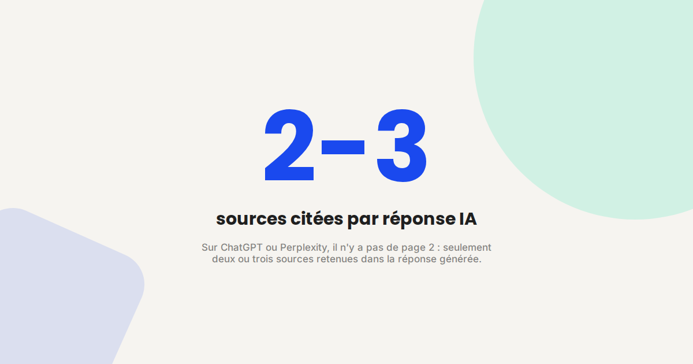
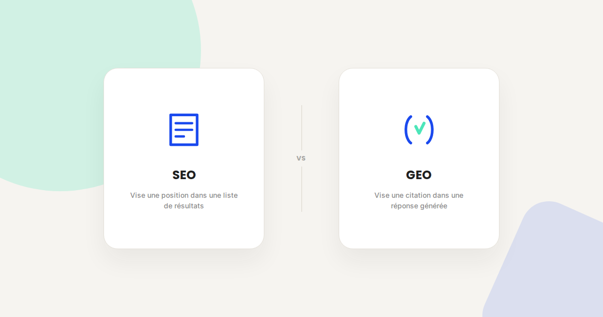
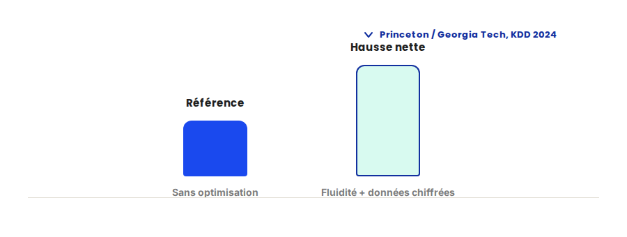

Le guide complet GEO pour ranker numéro 1 dans les LLMs
Tes concurrents ne sont plus seulement devant toi sur Google. Ils sont cités par ChatGPT, Perplexity et Claude avant toi. Ce guide réunit tout ce qu'il faut savoir pour comprendre le GEO (Generative Engine Optimization) et commencer à optimiser tes contenus pour être la source que l'IA choisit de citer — pas seulement une page de plus dans une liste de résultats.

Pourquoi le GEO est devenu incontournable
Les moteurs génératifs sont sortis du statut de gadget. ChatGPT, Perplexity, Claude et Gemini cumulent aujourd'hui des centaines de millions d'utilisateurs actifs, et une part croissante des recherches d'information passe directement par ces interfaces plutôt que par une page de résultats classique. Ce n'est plus un canal marginal : c'est un canal d'acquisition à part entière, avec ses propres règles.
Ce que ça change concrètement : quand un prospect demande à ChatGPT « quel est le meilleur outil pour X » ou « comment faire Y », il ne voit pas une liste de dix liens bleus à comparer. Il voit une réponse unique, avec deux ou trois sources citées. Si ton contenu ne fait pas partie de ces sources, tu n'existes tout simplement pas dans ce canal — quelle que soit la qualité de ton offre.
La bonne nouvelle : le GEO (Generative Engine Optimization) est encore jeune. Les règles ne sont pas figées, et la concurrence sur ce terrain reste très inférieure à celle qu'on trouve sur Google. Les sites qui structurent leurs contenus pour les LLMs maintenant prennent une avance que les retardataires auront du mal à rattraper — un peu comme en SEO il y a quinze ans, où les premiers à comprendre les règles ont construit des positions qui tiennent encore aujourd'hui.
SEO vs GEO : ce qui change concrètement
Le SEO et le GEO poursuivent le même objectif — rendre un contenu visible au moment où quelqu'un cherche une information — mais la mécanique derrière est radicalement différente.
- Ce qui est optimisé. En SEO, on optimise pour qu'un algorithme de classement place une page dans une liste. En GEO, on optimise pour qu'un modèle de langage comprenne, extraie et cite un passage précis dans une réponse qu'il génère.
- L'objectif final. En SEO, on vise une position — top 3, top 10. En GEO, on vise une citation : être la source que l'IA choisit de référencer. Il n'y a pas de position 4 dans une réponse Perplexity.
- Le signal de succès. En SEO, c'est le clic. En GEO, c'est la mention — et être cité sans clic direct reste une victoire, parce que ça construit une autorité perçue qui a son propre effet sur la marque, indépendamment du trafic généré.
- La forme du contenu. Les LLMs découpent les pages en passages (chunks), les convertissent en représentations numériques, puis récupèrent les passages les plus pertinents pour assembler une réponse. Un paragraphe qui garde tout son sens lu isolément, hors de son contexte d'origine, a beaucoup plus de chances d'être sélectionné qu'un paragraphe qui dépend de ce qui le précède.

Le GEO ne remplace pas le SEO, il l'étend. Les fondamentaux restent les mêmes : contenu de qualité, structure claire, autorité, crédibilité. C'est l'application qui change — et un contenu bien pensé pour le GEO a toutes les chances de mieux performer aussi en SEO classique, les deux logiques se renforcent plutôt qu'elles ne s'opposent.
Comment les LLMs choisissent leurs sources
Contrairement à un moteur de recherche classique, un LLM ne se contente pas d'afficher une liste de résultats classés. Il synthétise l'information de plusieurs sources pour générer une réponse unique. Le mécanisme derrière s'appelle le RAG (Retrieval-Augmented Generation) : le modèle reçoit la question, lance des sous-requêtes, récupère les passages les plus pertinents sur le web, puis assemble une réponse cohérente en citant ses sources.
Ce mécanisme repose sur quatre critères de sélection récurrents, observés sur l'ensemble des moteurs génératifs :
- E-E-A-T (Experience, Expertise, Authoritativeness, Trustworthiness). Les IA privilégient les sources qui prouvent qu'elles savent de quoi elles parlent : biographies d'auteurs identifiables, données chiffrées, études de cas, sources citées.
- Structure et clarté. Un contenu organisé avec une hiérarchie de titres logique (H1, H2, H3), des paragraphes courts et des réponses directes est beaucoup plus facile à extraire pour un modèle. Les IA ne cherchent pas : elles veulent trouver la réponse immédiatement.
- Fraîcheur. Les moteurs génératifs, Perplexity en particulier, privilégient les contenus récents. Un article mis à jour régulièrement avec des données actuelles est souvent préféré à un contenu plus complet mais daté.
- Citabilité. Le contenu doit pouvoir être extrait et réutilisé tel quel dans une réponse. Les formats Q&A, les définitions claires, les comparatifs structurés et les listes avec des données factuelles sont les formats les plus souvent cités.
Les 5 stratégies prouvées pour être cité par les IA
Une étude de référence sur le GEO, menée par des chercheurs de Princeton et de Georgia Tech et présentée à la conférence ACM SIGKDD 2024, a mesuré l'impact réel de différentes optimisations sur la visibilité d'un contenu dans les réponses génératives. Voici les cinq stratégies qui en ressortent, classées par impact.
- Ajouter des statistiques concrètes. Remplacer les formulations qualitatives (« une croissance significative ») par des données chiffrées précises (« une hausse de 37 % en 90 jours »). Les LLMs privilégient nettement les contenus factuels et quantifiés — c'est la stratégie individuelle la plus efficace mesurée par l'étude.
- Citer des sources crédibles. Intégrer plusieurs citations par tranche de mille mots, provenant de sources reconnues (études publiées, rapports sectoriels, institutions). Cela renforce la fiabilité perçue et donne au modèle un signal de confiance explicite.
- Optimiser la fluidité rédactionnelle. Des phrases claires, grammaticalement correctes, logiquement enchaînées. C'est le facteur le plus sous-estimé : l'étude montre qu'il améliore la visibilité de façon significative à lui seul, indépendamment du fond.
- Inclure des citations d'experts. Ajouter des citations d'autorités reconnues dans le domaine traité. Les LLMs traitent une citation comme une information vérifiée provenant d'une source légitime, ce qui pèse dans la sélection.
- Utiliser un vocabulaire technique précis. Intégrer les termes spécifiques du domaine plutôt que de les simplifier à outrance — pour le marketing digital : « cannibalisation », « cocon sémantique », « intention de recherche ». Le vocabulaire technique améliore la découvrabilité sur les requêtes spécialisées.

Le point le plus utile de cette étude : combiner fluidité et statistiques surpasse chacune des stratégies prises isolément. Elles ne sont pas mutuellement exclusives, c'est en les cumulant qu'on obtient le meilleur résultat. À l'inverse, le bourrage de mots-clés — la vieille technique SEO — produit l'effet inverse en GEO : les moteurs génératifs pénalisent la densité artificielle de mots-clés plutôt que de la récompenser.
Chaque LLM a ses préférences
Tous les moteurs génératifs ne citent pas de la même façon. Une stratégie pensée exclusivement pour ChatGPT avec un contenu très exhaustif passera à côté de Perplexity, qui privilégie des contenus récents et pointus.
- ChatGPT privilégie la richesse, l'autorité et l'exhaustivité. Il favorise les contenus à fort signal E-E-A-T : auteurs identifiés, données originales, contenu structuré qui répond à des intentions multiples en une seule page.
- Perplexity fonctionne en « citation-first » : il cite ses sources dans la quasi-totalité de ses réponses, avec une préférence marquée pour la fraîcheur et l'autorité de domaine — papiers académiques, rapports officiels, sources spécialisées. Un contenu niche et récent y devance souvent un contenu généraliste plus ancien.
- Claude privilégie la clarté, la profondeur et la structure. Un contenu bien organisé, avec une hiérarchie logique et des réponses précises, a davantage de chances d'y être retenu.
- Gemini, intégré à l'écosystème Google, s'appuie sur les mêmes signaux que la recherche classique : E-E-A-T, données structurées, Core Web Vitals. Un travail SEO solide y profite directement.
La stratégie la plus robuste combine ces quatre exigences plutôt que d'en viser une seule : un contenu riche et autorité, récent et bien sourcé, clair et structuré, techniquement solide. C'est cette combinaison qui couvre l'ensemble des moteurs plutôt qu'un seul d'entre eux.
Comment auditer et optimiser concrètement ta visibilité IA
Avant d'optimiser quoi que ce soit, il faut savoir où on part. Dans les audits que je mène, la méthode reste la même quel que soit le secteur : poser aux IA génératives les questions que se posent réellement les clients — pas des requêtes génériques sur la marque, mais les vraies questions métier qui précèdent une décision d'achat — et noter systématiquement si le site apparaît parmi les sources citées, sur quelle formulation, et pour quel moteur.
Cette cartographie initiale révèle presque toujours le même schéma : une poignée de pages déjà bien positionnées en SEO classique sont proches d'être citées mais leur structure les en empêche — réponse enterrée après plusieurs paragraphes d'introduction, absence de données chiffrées, aucune source citée pour appuyer les affirmations. Ce sont les corrections les plus rentables à faire en premier, avant même de produire du contenu nouveau.
Le détail de cette méthode d'audit — comment formuler les questions test, quels outils utiliser pour suivre l'évolution dans le temps, comment prioriser les pages à corriger — fait l'objet d'un accompagnement dédié : voir la page Audit visibilité IA. La suite ci-dessous reprend l'essentiel à appliquer une fois cet audit fait.
Checklist GEO : les actions à appliquer maintenant
Structure
- Une hiérarchie de titres stricte (H1, H2, H3) sans sauter de niveau.
- Des paragraphes courts (2 à 4 lignes), qui gardent leur sens lus isolément.
- Des formats Q&A pour capter les requêtes conversationnelles.
Contenu
- Des données chiffrées à la place des formulations vagues.
- Plusieurs sources crédibles citées par tranche de mille mots.
- Des citations d'experts du domaine traité.
- Un vocabulaire technique assumé, sans simplification excessive.
- La réponse dès les premières lignes — ne jamais l'enterrer après l'introduction.
Technique
- Un robots.txt qui n'exclut pas les crawlers IA (GPTBot, PerplexityBot, etc.).
- Des données structurées Schema.org pertinentes (FAQPage, HowTo, Article, Product).
- Des Core Web Vitals soignés : un site lent est un site invisible, pour les bots IA aussi.
Autorité
- Des biographies d'auteurs claires et complètes.
- Des études de cas, témoignages et données originales publiées.
- Des mentions obtenues depuis des sources tierces reconnues.
Fraîcheur et mesure
- Une mise à jour des contenus stratégiques au moins tous les trimestres, datée visiblement.
- Un test manuel régulier : poser les questions de tes clients à ChatGPT, Perplexity et Claude.
- Un suivi du trafic référé par les IA dans GA4 et des requêtes de marque dans Search Console.
FAQ
Le GEO remplace-t-il le SEO ?
Non. Le GEO étend le SEO, il ne le remplace pas. Les fondamentaux restent les mêmes — contenu de qualité, structure claire, autorité, crédibilité — mais l'objectif change : viser une citation dans une réponse générée plutôt qu'une position dans une liste de résultats. Un contenu bien optimisé pour le GEO performe généralement aussi mieux en SEO classique.
Combien de temps faut-il pour voir un effet sur sa visibilité dans les IA ?
Il n'existe pas de délai garanti, mais dans les audits que je mène, un effet mesurable apparaît généralement après plusieurs semaines à quelques mois de contenu retravaillé selon les critères GEO — le temps que les moteurs génératifs recrawlent et réindexent les pages concernées.
Comment savoir si mes contenus sont déjà cités par les IA ?
Le test le plus direct est manuel : pose à ChatGPT, Perplexity et Claude les questions que se posent réellement tes clients, et regarde si ton site apparaît parmi les sources citées. En complément, surveille le trafic référé par ces plateformes dans GA4 et l'évolution des recherches de marque dans Search Console, un signal indirect de visibilité IA.
Faut-il une stratégie différente pour chaque IA (ChatGPT, Perplexity, Claude) ?
Les principes de base sont communs, mais chaque moteur a ses préférences propres — Perplexity privilégie fortement la fraîcheur et les sources spécialisées, ChatGPT récompense l'exhaustivité et l'autorité, Claude la clarté structurelle. Une stratégie qui combine ces trois exigences couvre l'essentiel plutôt que de viser un seul moteur en particulier.
Envie d'un audit de ta visibilité dans les IA génératives ?
Pour aller plus loin, voir la page GEO, la page Audit visibilité IA, et l'article SEO vs GEO : ce qui change vraiment.
Pour continuer sur ce sujet.